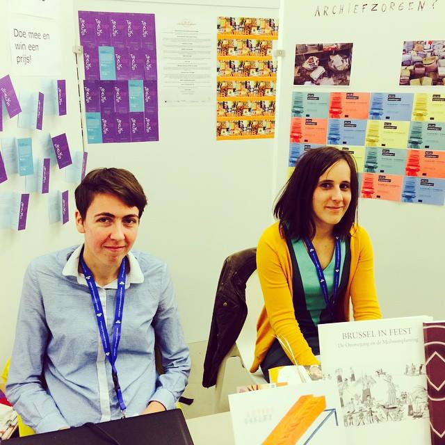

Portfolio Nastasia Vanderperren
Home
Over mij
I1Talent
CV
Realisaties
Hobby's
Links
Contactformulier
Hallo, ik ben Nastasia
© Alda Snopek
Over mij

© Patrick Vanhoucke
Curriculum Vitae
© Elisa Vanelderen
Hobby's
© Nastasia Vanderperren
Contact